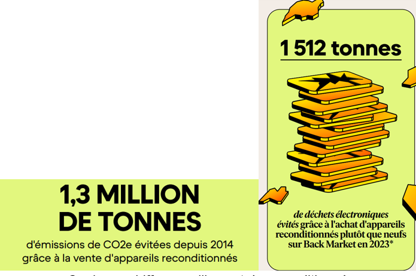
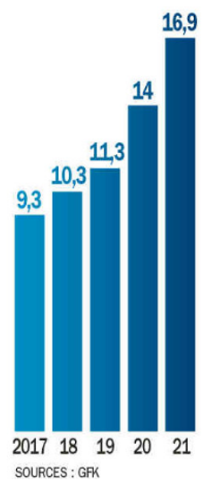

Back Market, ou Jung SAS, est une entreprise de commerce électronique française, créée en 2014 par Thibaud Hug de Larauze, Vianney Vaute et Quentin Le Brouster, trois entrepreneurs français, qui sert d'intermédiaire entre particuliers et professionnels du reconditionnement d’appareils électriques ou électroniques. Leur objectif est de populariser la consommation de produits remis à neuf et lutter contre l’obsolescence programmée. Sur le long terme, leur but est de participer à la diminution de la fabrication d'appareils. Back Market propose aux clients finaux des matériels d'occasion, recyclés par des reconditionneurs professionnels, des boutiques d'occasion, partenaires de Back Market, qui est finalement un “agent de liaison” entre le client et le reconditionneur. Une question se pose : comment Back Market a-t-il réussi à séduire ses clients, qui sont de plus en plus à vouloir acheter du reconditionné?
Le premier argument qui vient en tête, et celui qui a motivé la création de Back Market, est la démarche écologique de l’entreprise et du reconditionné. Du fait du recyclage d’un objet électronique déjà utilisé, les ressources utilisées sont moindres comparées à celles nécessaires pour la fabrication d’un nouveau téléphone par exemple. Selon une étude publiée par l’ADEME (Agence de l'environnement et de la maîtrise de l'énergie), un smartphone reconditionné, c’est 178 g d’e-déchets en moins, 243 kg de matières premières non extraites, 77 kg d’émissions carbones évitées et 77000 L d’eau sauvés. De tels chiffres montrent l’impact écologique très inférieur qu’a un smartphone reconditionné par rapport à un neuf. De son côté, Back Market a grandement contribué à l’avancement de la démarche écologique du reconditionné, comme les chiffres ci-dessous le montrent:

Le reconditionné permet donc de faire un grand pas vers un commerce en ligne plus vertueux, et vers la diminution de notre empreinte carbone. L’aspect économique avantageux du reconditionné est aussi à prendre en considération. En effet, un téléphone reconditionné peut être vendu 20 à 50% moins cher qu’un téléphone neuf, en fonction de son état, argument de vente qui permet d’attirer des clients tout en gardant un aspect qualitatif très bon par rapport au neuf. Ainsi, en 2023, 67% des 18-65 ans en France ont acheté ou ont eu envie d’acheter du reconditionné. Parmi eux, 43% ont déjà franchi le pas, soit bien mieux que les 37% enregistrés en 2022. Back Market, fort de ses qualités, se présente donc comme l’un des leaders en matière de reconditionné.
Pour autant, Back Market essuie aussi des critiques concernant notamment les reconditionneurs que l’on peut trouver sur leur site. En effet, si la majorité des reconditionneurs sur le site sont qualitatifs et certifiés, il arrive que certains reconditionneurs mal intentionnés puissent mettre en vente leurs produits sur le site, ce qui peut conduire à de mauvaises surprises lorsque l’on reçoit le produit. Cela constitue en plus une perte d’argent dont le client se passerait volontiers et qui peut l’amener à ne plus faire confiance ni au site, ni au reconditionné. De plus, la transparence sur le lieu où a été réalisé le reconditionnement de l’appareil est souvent floue. Ainsi un téléphone refusant de prendre des photos silencieusement a probablement été reconditionné au Japon, où la loi interdit les prises de photographies silencieuses. Le transport entraîne donc une augmentation de l’empreinte carbone du produit reconditionné, qui perd donc son avantage écologique.
Sur ce graphique représentant la part de smartphones reconditionnés vendus en France, seuls 30% ont été reconditionnés en France, preuve que le reconditionné a encore des progrès à faire. Il est en effet plus écologique de réaliser ces réparations localement et ainsi éviter le coût environnemental élevé du transport des objets.
Ainsi, à travers l’exemple de Back Market, nous pouvons voir les avantages et les inconvénients du reconditionné à l’heure actuelle. Le reconditionné est une alternative avantageuse à l’achat d’un objet électronique neuf, alliant économies financières et réduction de l’impact environnemental. Cependant, il comporte aussi des limites, comme une qualité variable selon les fournisseurs et une transparence faible sur la provenance des objets reconditionnés. Malgré ces inconvénients, il s’impose comme une solution clé pour consommer de manière plus responsable et est lui aussi une solution viable pour un e-commerce plus vertueux.
